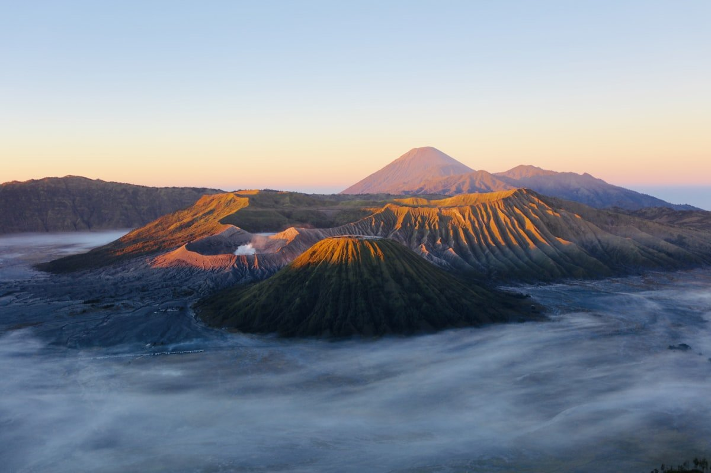

Pilihan Titik Singgah & Destinasi Bahari Indonesia
Pilihlah wilayah penjelajahan alam sesuai kategori lanskap dan kesiapan fisik Anda. Setiap destinasi dilengkapi informasi logistik resmi dan kuota tim per keberangkatan.
 Bahari Timur
Bahari Timur
Piaynemo & Teluk Kabui
Gugusan pulau karang mikro dengan gua bawah laut alami dan jalur perlintasan pari manta karang raksasa.

VulkanikKawah Bromo & Bukit Cinta
Penjelajahan kawah purba kaldera dengan pemandangan gugusan Gunung Batok dan puncak tertinggi Semeru.
 Bahari Sunda
Bahari Sunda
Pulau Rinca & Pantai Merah
Pantai berpasir merah muda dari serpihan foraminifera mikroskopis dan pengamatan perilaku liar kadal purba.
Kawah Ijen & Danau Asam
Fenomena gas belerang menyala biru elektrik di dasar danau kawah terasam di dunia pada suhu ekstrem malam hari.